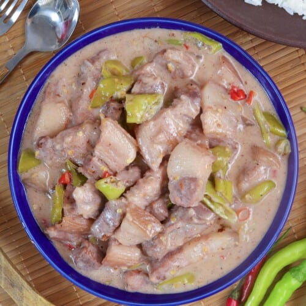

Bicol Express

Description
Bicol Express is pure comfort food! With pork cubes cooked in coconut milk and chili peppers, it’s rich, creamy, spicy and delicious. Serve with steamed rice for a hearty and big flavored meal!
Ingredients:
1 onion, peeled and sliced thinly
4 cloves garlic, peeled and minced
2 pounds pork belly, cut into 1-inch cubes
2 tablespoons fresh shrimp paste
1 can (13.5 ounces) coconut milk
14 pieces Thai chili peppers, stemmed and minced
2 cups finger chilies (siling haba), sliced
Steps:
In a wide pot over medium heat, heat oil.
Add onions and garlic and cook, stirring occasionally, until softened.
Add pork and cook, stirring occasionally, until lightly browned.
Add shrimp paste and cook, stirring occasionally, for about 1 to 2 minutes.
Add coconut milk, water, and chili peppers. Bring to a simmer and cook for about 35 to 35 minutes or until pork is tender and liquid is reduced and begins to render fat.
Add finger chilies and cook, stirring regularly, for about 1 to 2 minutes.
Add coconut cream and continue to simmer until thickened and begins to render fat.
Season with salt and pepper to taste. Serve hot.